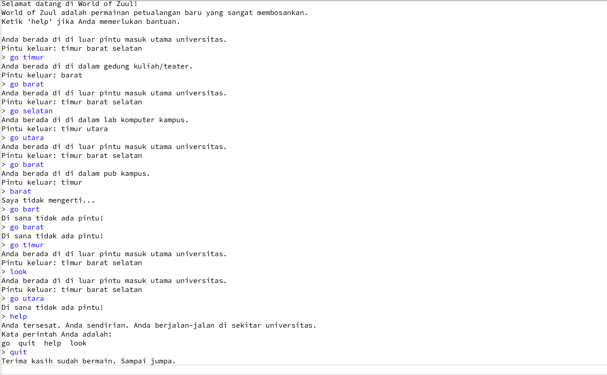

Penjelasan Kelas-kelas Game "World of Zuul"
Ini adalah ringkasan fungsionalitas dari setiap file Java yang membentuk game petualangan berbasis teks sederhana.
Ruangan.java
Kelas ini merepresentasikan **satu lokasi** atau ruangan dalam dunia game.
Atribut Utama:
deskripsi(String): Deskripsi singkat ruangan (misalnya, "di dalam pub kampus").exits(HashMap<String, Ruangan>): Struktur data yang menyimpan semua pintu keluar. Kunci (Key) adalah arah (String, seperti "utara"), dan Nilai (Value) adalah objekRuangantujuan.
Fungsi Utama:
setExit(String direction, Ruangan neighbor): Menetapkan pintu keluar dari ruangan ini ke ruangan lain pada arah tertentu.getExit(String direction): Mengembalikan objekRuangantujuan berdasarkan arah yang diberikan. Mengembalikannulljika tidak ada pintu keluar di arah tersebut.getLongDescription(): Mengembalikan deskripsi lengkap ruangan saat ini, termasuk daftar semua pintu keluar yang tersedia.
**Konsep Utama:** Kelas ini menggunakan
HashMap untuk memodelkan pintu keluar, memungkinkan akses cepat ke ruangan berikutnya berdasarkan arah yang dimasukkan pemain.Command.java
Kelas ini menyimpan informasi tentang perintah yang dimasukkan oleh pengguna, yang terdiri dari maksimal dua kata.
Atribut Utama:
perintah(String): Kata perintah pertama (misalnya, "go", "help", "quit").kalimat2(String): Kata kedua dari perintah (biasanya parameter, seperti "utara" untuk "go utara").
Fungsi Utama:
isUnknown(): Mengembalikantruejika kata perintah pertama (perintah) adalahnull, yang menandakan perintah tidak valid.hasSecondWord(): Mengembalikantruejika perintah memiliki kata kedua.- Metode
getPerintah()dangetKalimat2(): Digunakan untuk mengambil kata-kata perintah.
CommandWords.java
Kelas ini bertugas menyimpan dan mengelola daftar semua kata perintah yang valid dalam game.
Atribut Utama:
VALID_COMMANDS(private static final String[]): Array yang berisi daftar perintah yang diizinkan: **"go"**, **"quit"**, **"help"**, dan **"look"**.
Fungsi Utama:
isCommand(String commandString): Memeriksa apakah sebuah string yang diberikan adalah salah satu perintah yang valid.showAll(): Mencetak semua perintah yang valid ke konsol.
Parser.java
Kelas ini bertanggung jawab untuk membaca masukan dari pengguna dan mengubahnya menjadi objek Command yang dapat diproses oleh game.
Atribut Utama:
commands(CommandWords): Objek yang digunakan untuk memeriksa validitas kata perintah.reader(Scanner): Digunakan untuk membaca masukan baris dari konsol (System.in).
Fungsi Utama:
getCommand(): Fungsi inti.- Membaca seluruh baris masukan pengguna.
- Memecah baris tersebut menjadi dua kata (kata pertama dan kata kedua).
- Menggunakan
commands.isCommand()untuk memverifikasi kata pertama. - Mengembalikan objek
Commandbaru. Jika kata pertama tidak valid, ia mengembalikan objekCommanddengan kata perintahnull(sehinggaisUnknown()akan bernilaitrue).
showCommands(): Meneruskan panggilan untuk menampilkan semua perintah yang valid.
Game.java
Ini adalah **kelas utama** yang menjalankan logika permainan. Kelas ini menginisialisasi dunia game dan menangani perulangan utama (game loop).
Atribut Utama:
parser(Parser): Objek untuk membaca dan menginterpretasikan perintah pengguna.currentRoom(Ruangan): ObjekRuangantempat pemain berada saat ini.
Fungsi Utama:
createRooms(): Metode inisialisasi yang membuat semua objekRuangan(outside, theater, pub, lab, office) dan menetapkan pintu keluar (menghubungkan ruangan-ruangan).play(): Metode yang memulai permainan. Ini mencetak pesan sambutan dan menjalankan perulanganwhileutama yang terus memproses perintah hingga permainan berakhir.processCommand(Command command): Memeriksa kata perintah dan memanggil metode yang sesuai (printHelp(),goRoom(),quit(),look()).goRoom(Command command): Memproses perintah "go". Mencari ruangan tujuan; jika ada, memperbaruicurrentRoompemain dan mencetak deskripsi ruangan baru.look(): Memproses perintah "look" dengan mencetak deskripsi ruangan saat ini secara lengkap (menggunakancurrentRoom.getLongDescription()).
Alur Game: Kelas
Game adalah orkestrator yang menghubungkan semua komponen, Parser menerima masukan, Command menyimpan masukan, CommandWords memvalidasi, dan Ruangan memodelkan dunia.Screenshot Cara Bermain World of Zuul
berikut ini merupakan link kode saya: